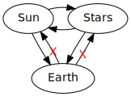
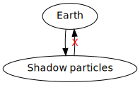
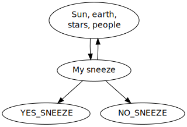
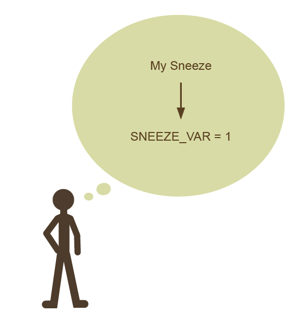
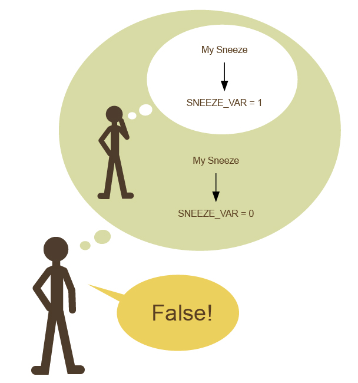
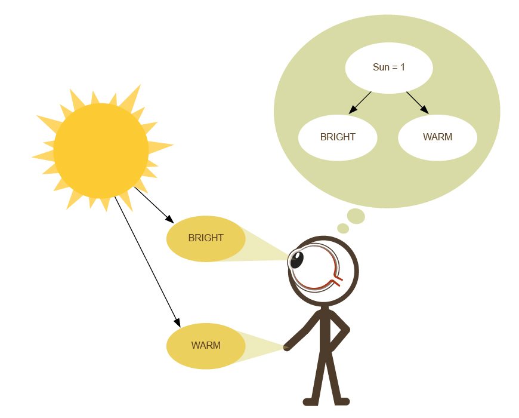
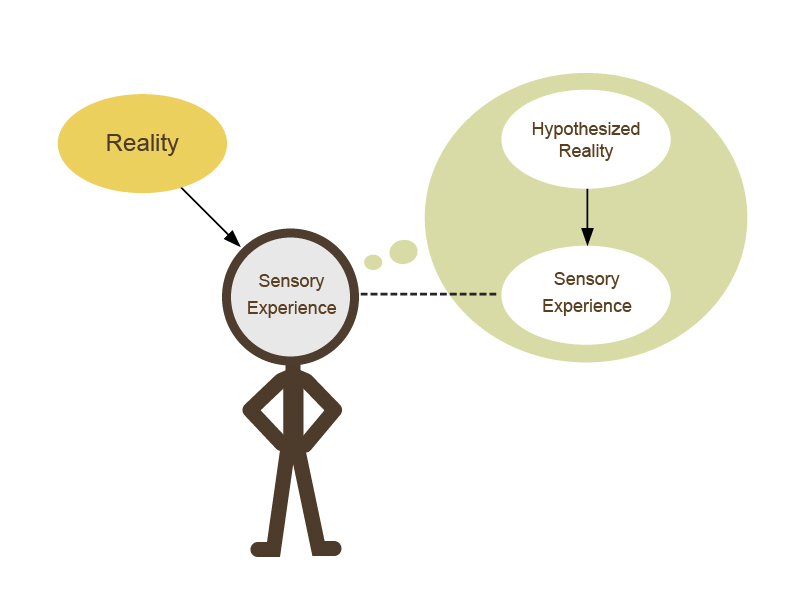
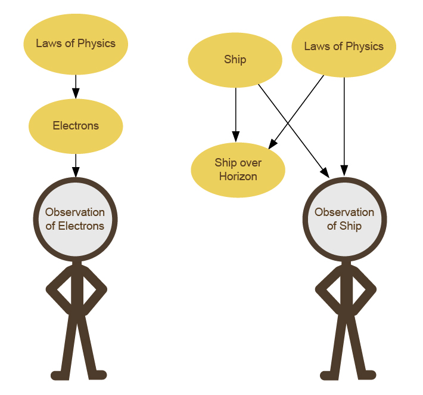

Eliezer Yudkowsky, 20 October 2012 10:12PM
Followup to: The Fabric of Real Things [http://lesswrong.com/lw/eva/the_fabric_of_real_things/], Stuff That Makes Stuff Happen [http://lesswrong.com/lw/ezu/stuff_that_makes_stuff_happen/]
Previous meditation [http://lesswrong.com/lw/eva/the_fabric_of_real_things/#7lqi]: "Does your rule forbid epiphenomenalist theories of consciousness [http://lesswrong.com/lw/p7/zombies_zombies/] that consciousness is caused by neurons, but doesn't affect those neurons in turn? The classic argument for epiphenomenal consciousness is that we can imagine a universe where people behave exactly the same way, but there's nobody home - no awareness, no consciousness, inside the brain. For all the atoms in this universe to be in the same place - for there to be no detectable difference internally, not just externally - 'consciousness' would have to be something created by the atoms in the brain, but which didn't affect those atoms in turn. It would be an effect of atoms, but not a cause of atoms. Now, I'm not so much interested in whether you think epiphenomenal theories of consciousness are true or false - rather, I want to know if you think they're impossible or meaningless a priori based on your rules."
Is it coherent to imagine a universe in which a real entity can be an effect but not a cause?
Well... there's a couple of senses in which it seems imaginable. It's important to remember that imagining things yields info primarily about what human brains can imagine. It only provides info about reality to the extent that we think imagination and reality are systematically correlated for some reason.
That said, I can certainly write a computer program in which there's a tier of objects affecting each other, and a second tier - a lower tier - of epiphenomenal objects which are affected by them, but don't affect them. For example, I could write a program to simulate some balls that bounce off each other, and then some little shadows that follow the balls around.
But then I only know about the shadows because I'm outside that whole universe, looking in. So my mind is being affected by both the balls and shadows - to observe something is to be affected by it. I know where the shadow is, because the shadow makes pixels be drawn on screen, which make my eye see pixels. If your universe has two tiers of causality - a tier with things that affect each other, and another tier of things that are affected by the first tier without affecting them - then could you know that fact from inside that universe?
Again, this seems easy to imagine as long as objects in the second tier can affect each other. You'd just have to be living in the second tier! We can imagine, for example - this wasn't the way things worked out in our universe, but it might've seemed plausible to the ancient Greeks - that the stars in heaven (and the Sun as a special case) could affect each other and affect Earthly forces, but no Earthly force could affect them:

(Here the X'd-arrow stands for 'cannot affect'.)
The Sun's light would illuminate Earth, so it would cause plant growth. And sometimes you would see two stars crash into each other and explode, so you'd see they could affect each other. (And affect your brain, which was seeing them.) But the stars and Sun would be made out of a different substance, the 'heavenly material', and throwing any Earthly material at it would not cause it to change state in the slightest. The Earthly material might be burned up, but the Sun would occupy exactly the same position as before. It would affect us, but not be affected by us.
(To clarify an important point raised in the comments: In standard causal diagrams and in standard physics, no two individual events ever affect each other; there's a causal arrow from the PAST to FUTURE but never an arrow from FUTURE to PAST. What we're talking about here is the sun and stars over time, and the generalization over causal arrows that point from Star-in-Past to Sun-in-Present and Sun-in-Present back to Star-in-Future. The standard formalism dealing with this would be Dynamic Bayesian Networks (DBNs) in which there are repeating nodes and repeating arrows for each successive timeframe: X1, X2, X3, and causal laws F relating Xi to Xi+1. If the laws of physics did not repeat over time, it would be rather hard to learn about the universe! The Sun repeatedly sends out photons, and they obey the same laws each time they fall on Earth; rather than the Fi being new transition tables each time, we see a constant Fphysics over and over. By saying that we live in a single-tier universe, we're observing that whenever there are F-arrows, causal-link-types, which (over repeating time) descend from variables-of-type-X to variables-of-type-Y (like present photons affecting future electrons), there are also arrows going back from Ys to Xs (like present electrons affecting future photons). If we weren't generalizing over time, it couldn't possibly make sense to speak of thingies that "affect each other" - causal diagrams don't allow directed cycles!)
A two-tier causal universe seems easy to imagine, even easy to specify as a computer program. If you were arranging a Dynamic Bayes Net at random, would it randomly have everything in a single tier? If you were designing a causal universe at random, wouldn't there randomly be some things that appeared to us as causes but not effects? And yet our own physicists haven't discovered any upper-tier particles which can move us without being movable by us. There might be a hint here at what sort of thingies tend to be real in the first place - that, for whatever reasons, the Real Rules somehow mandate or suggest that all the causal forces in a universe be on the same level, capable of both affecting and being affected by each other.
Still, we don't actually know the Real Rules are like that; and so it seems premature to assign a priori zero probability to hypotheses with multi-tiered causal universes. Discovering a class of upper-tier affect-only particles seems imaginable[1] [http://lesswrong.com/lw/f1u/causal_reference/#note1] - we can imagine which experiences would convince us that they existed. If we're in the Matrix, we can see how to program a Matrix like that. If there's some deeper reason why that's impossible in any base-level reality, we don't know it yet. So we probably want to call that a meaningful hypothesis for now.
But what about lower-tier particles which can be affected by us, and yet never affect us?

Perhaps there are whole sentient Shadow Civilizations living on my nose hairs which can never affect those nose hairs, but find my nose hairs solid beneath their feet. (The solid Earth affecting them but not being affected, like the Sun's light affecting us in the 'heavenly material' hypothesis.) Perhaps I wreck their world every time I sneeze. It certainly seems imaginable - you could write a computer program simulating physics like that, given sufficient perverseness and computing power...
And yet the fundamental question of rationality - "What do you think you know, and how do you think you know it?" - raises the question:
How could you possibly know about the lower tier, even if it existed?
To observe something is to be affected by it - to have your brain and beliefs take on different states, depending on that thing's state. How can you know about something that doesn't affect your brain?
In fact there's an even deeper question, "How could you possibly talk about that lower tier of causality even if it existed?"
Let's say you're a Lord of the Matrix. You write a computer program which first computes the physical universe as we know it (or a discrete approximation), and then you add a couple of lower-tier effects as follows:
First, every time I sneeze, the binary variable YES_SNEEZE will be set to the second of its two possible values.
Second, every time I sneeze, the binary variable NO_SNEEZE will be set to the first of its two possible values.

Now let's say that - somehow - even though I've never caught any hint of the Matrix - I just magically think to myself one day, "What if there's a variable that watches when I sneeze, and gets set to 1?"

It will be all too easy [http://lesswrong.com/lw/eqn/the_useful_idea_of_truth/] for me to imagine that this belief is meaningful and could be true or false:

And yet in reality - as you know from outside the matrix - there are two shadow variables that get set when I sneeze. How can I talk about one of them, rather than the other? Why should my thought about '1' refer to their second possible value rather than their first possible value, inside the Matrix computer program? If we tried to establish a truth-value in this situation, to compare my thought to the reality inside the computer program - why compare my thought about SNEEZE_VAR to the variable YES_SNEEZE instead of NO_SNEEZE, or compare my thought '1' to the first possible value instead of the second possible value?
Under more epistemically healthy circumstances, when you talk about things that are not directly sensory experiences, you will reference a causal model of the universe that you inducted to explain your sensory experiences. Let's say you repeatedly go outside at various times of day, and your eyes and skin directly experience BRIGHT-WARM, BRIGHT-WARM, BRIGHT-WARM, DARK-COOL, DARK-COOL, etc. To explain the patterns in your sensory experiences, you hypothesize a latent variable we'll call 'Sun', with some kind of state which can change between 1, which causes BRIGHTness and WARMness, and 0, which causes DARKness and COOLness. You believe that the state of the 'Sun' variable changes over time, but usually changes less frequently than you go outside.
|  |
|
Standing here outside the Matrix, we might be tempted to compare your beliefs about "Sun = 1", to the real universe's state regarding the visibility of the sun in the sky (or rather, the Earth's rotational position).
But even if we compress the sun's visibility down to a binary categorization, how are we to know that your thought "Sun = 1" is meant to correspond to the sun being visible in the sky, rather than the sun being occluded by the Earth? Why the first state of the variable, rather than the second state?
How indeed are we know that this thought "Sun = 1" is meant to compare to the sun at all, rather than an anteater in Venezuela?
Well, because that 'Sun' thingy is supposed to be the cause of BRIGHT and WARM feelings, and if you trace back the cause of those sensory experiences in reality you'll arrive at the sun that the 'Sun' thought allegedly corresponds to. And to distinguish between whether the sun being visible in the sky is meant to correspond to 'Sun'=1 or 'Sun'=0, you check the conditional probabilities for that 'Sun'-state giving rise to BRIGHT - if the actual sun being visible has a 95% chance of causing the BRIGHT sensory feeling, then that true state of the sun is intended to correspond to the hypothetical 'Sun'=1, not 'Sun'=0.
Or to put it more generally, in cases where we have...

...then the correspondence between map and territory can at least in principle be point-wise evaluated by tracing causal links back from sensory experiences to reality, and tracing hypothetical causal links from sensory experiences back to hypothetical reality. We can't directly evaluate that truth-condition inside our own thoughts; but we can perform experiments and be corrected by them.
Being able to imagine that your thoughts are meaningful and that a correspondence between map and territory is being maintained, is no guarantee that your thoughts are true. On the other hand, if you can't even imagine within your own model how a piece of your map could have a traceable correspondence to the territory, that is a very bad sign for the belief being meaningful, let alone true. Checking to see whether you can imagine a belief being meaningful is a test which will occasionally throw out bad beliefs, though it is no guarantee of a belief being good.
Okay, but what about the idea that it should be meaningful to talk about whether or not a spaceship continues to exist after it travels over the cosmological horizon? Doesn't this theory of meaningfulness seem to claim that you can only sensibly imagine something that makes a difference to your sensory experiences?
No. It says that you can only talk about events that your sensory experiences pin down within the causal graph. If you observe enough protons, electrons, neutrons, and so on, you can pin down the physical generalization which says, "Mass-energy is neither created nor destroyed; and in particular, particles don't vanish into nothingness without a trace." It is then an effect of that rule, combined with our previous observation of the ship itself, which tells us that there's a ship that went over the cosmological horizon and now we can't see it any more.

To navigate referentially to the fact that the ship continues to exist over the cosmological horizon, we navigate from our sensory experience up to the laws of physics, by talking about the cause of electrons not blinking out of existence; we also navigate up to the ship's existence by tracing back the cause of our observation of the ship being built. We can't see the future ship over the horizon - but the causal links down from the ship's construction, and from the laws of physics saying it doesn't disappear, are both pinned down by observation - there's no difficulty in figuring out which causes we're talking about, or what effects they have.[2] [http://lesswrong.com/lw/f1u/causal_reference/#note2]
All righty-ighty, let's revisit that meditation:
"Does your rule forbid epiphenomenalist theories of consciousness [http://lesswrong.com/lw/p7/zombies_zombies/] in which consciousness is caused by neurons, but doesn't affect those neurons in turn? The classic argument for epiphenomenal consciousness is that we can imagine a universe where people behave exactly the same way, but there's nobody home - no awareness, no consciousness, inside the brain. For all the atoms in this universe to be in the same place - for there to be no detectable difference internally, not just externally - 'consciousness' would have to be something created by the atoms in the brain, but which didn't affect those atoms in turn. It would be an effect of atoms, but not a cause of atoms. Now, I'm not so much interested in whether you think epiphenomenal theories of consciousness are true or false - rather, I want to know if you think they're impossible or meaningless a priori based on your rules."
The closest theory to this which definitely does seem coherent - i.e., it's imaginable that it has a pinpointed meaning - would be if there was another little brain living inside my brain, made of shadow particles which could affect each other and be affected by my brain, but not affect my brain in turn. This brain would correctly hypothesize the reasons for its sensory experiences - that there was, from its perspective, an upper tier of particles interacting with each other that it couldn't affect. Upper-tier particles are observable, i.e., can affect lower-tier senses, so it would be possible to correctly induct a simplest explanation for them. And this inner brain would think, "I can imagine a Zombie Universe in which I am missing, but all the upper-tier particles go on interacting with each other as before." If we imagine that the upper-tier brain is just a robotic sort of agent, or a kitten, then the inner brain might justifiably imagine that the Zombie Universe would contain nobody to listen - no lower-tier brains to watch and be aware of events.
We could write that computer program, given significantly more knowledge and vastly more computing power and zero ethics.
But this inner brain composed of lower-tier shadow particles cannot write upper-tier philosophy papers about the Zombie universe. If the inner brain thinks, "I am aware of my own awareness", the upper-tier lips cannot move and say aloud, "I am aware of my own awareness" a few seconds later. That would require causal links from lower particles to upper particles.
If we try to suppose that the lower tier isn't a complicated brain with an independent reasoning process that can imagine its own hypotheses, but just some shadowy pure experiences that don't affect anything in the upper tier, then clearly the upper-tier brain must be thinking meaningless gibberish when the upper-tier lips say, "I have a lower tier of shadowy pure experiences which did not affect in any way how I said these words." The deliberating upper brain that invents hypotheses for sense data, can only use sense data that affects the upper neurons carrying out the search for hypotheses that can be reported by the lips. Any shadowy pure experiences couldn't be inputs into the hypothesis-inventing cognitive process. So the upper brain would be talking nonsense.
There's a version of this theory in which the part of our brain that we can report out loud, which invents hypotheses to explain sense data out loud and manifests physically visible papers about Zombie universes, has for no explained reason invented a meaningless theory of shadow experiences which is experienced by the shadow part as a meaningful and correct theory. So that if we look at the "merely physical" slice of our universe, philosophy papers about consciousness are meaningless and the physical part of the philosopher is saying things their physical brain couldn't possibly know even if they were true. And yet our inner experience of those philosophy papers is meaningful and true. In a way that couldn't possibly have caused me to physically write the previous sentence, mind you. And yet your experience of that sentence is also true even though, in the upper tier of the universe where that sentence was actually written, it is not only false but meaningless.
I'm honestly not sure what to say when a conversation gets to that point. Mostly you just want to yell, "Oh, for the love of Belldandy, will you just give up already? [http://lesswrong.com/lw/pn/zombies_the_movie/]" or something about the importance of saying oops [http://lesswrong.com/lw/i9/the_importance_of_saying_oops/].
(Oh, plus the unexplained correlation violates the Markov condition for causal models [http://lesswrong.com/lw/ezu/stuff_that_makes_stuff_happen/].)
Maybe my reply would be something along the lines of, "Okay... look... I've given my account of a single-tier universe in which agents can invent meaningful explanations for sense data, and when they build accurate maps of reality there's a known reason for the correspondence... if you want to claim that a different kind of meaningfulness can hold within a different kind of agent divided into upper and lower tiers, it's up to you to explain what parts of the agent are doing which kinds of hypothesizing and how those hypotheses end up being meaningful and what causally explains their miraculous accuracy so that this all makes sense."
But frankly, I think people would be wiser to just give up trying to write sensible philosophy papers about lower causal tiers of the universe that don't affect the philosophy papers in any way.
Meditation [http://lesswrong.com/lw/f1u/causal_reference/#7nyc]: If we can only meaningfully talk about parts of the universe that can be pinned down inside the causal graph, where do we find the fact that 2 + 2 = 4? Or did I just make a meaningless noise, there? Or if you claim that "2 + 2 = 4" isn't meaningful or true, then what alternate property does the sentence "2 + 2 = 4" have which makes it so much more useful than the sentence "2 + 2 = 3"?
Mainstream status. [http://lesswrong.com/lw/f1u/causal_reference/#7nyf]
[http://lesswrong.com/lw/f1u/causal_reference/#note1back] [1] [http://lesswrong.com/lw/f1u/causal_reference/#note1back] Well, it seems imaginable so long as you toss most of quantum physics out the window and put us back in a classical universe. For particles to not be affected by us, they'd need their own configuration space such that "which configurations are identical [http://lesswrong.com/lw/pf/distinct_configurations/]" was determined by looking only at those particles, and not looking at any lower-tier particles entangled with them. If you don't want to toss QM out the window, it's actually pretty hard to imagine what an upper-tier particle would look like.
[http://lesswrong.com/lw/f1u/causal_reference/#note2back] [2] [http://lesswrong.com/lw/f1u/causal_reference/#note2back] This diagram treats the laws of physics as being just another node, which is a convenient shorthand, but probably not a good way to draw the graph. The laws of physics really correspond to the causal arrows Fi, not the causal nodes Xi. If you had the laws themselves - the function from past to future - be an Xi of variable state, then you'd need meta-physics to describe the Fphysics arrows for how the physics-stuff Xphysics could affect us, followed promptly by a need for meta-meta-physics et cetera. If the laws of physics were a kind of causal stuff, they'd be an upper tier of causality - we can't appear to affect the laws of physics, but if you call them causes, they can affect us. In Matrix terms, this would correspond to our universe running on a computer that stored the laws of physics in one area of RAM and the state of the universe in another area of RAM, the first area would be an upper causal tier and the second area would be a lower causal tier. But the infinite regress from treating the laws of determination as causal stuff, makes me suspicious that it might be an error to treat the laws of physics as "stuff that makes stuff happen and happens because of other stuff". When we trust that the ship doesn't disappear when it goes over the horizon, we may not be navigating to a physics-node in the graph, so much as we're navigating to a single Fphysics that appears in many different places inside the graph, and whose previously unknown function we have inferred. But this is an unimportant technical quibble on Tuesdays, Thursdays, Saturdays, and Sundays. It is only an incredibly deep question about the nature of reality on Mondays, Wednesdays, and Fridays, i.e., less than half the time.
Part of the sequence Highly Advanced Epistemology 101 for Beginners [http://wiki.lesswrong.com/wiki/Highly_Advanced_Epistemology_101_for_Beginners]
Next post: "Proofs, Implications, and Models [http://lesswrong.com/lw/f43/proofs_implications_and_models/]"
Previous post: "Stuff That Makes Stuff Happen [http://lesswrong.com/lw/ezu/stuff_that_makes_stuff_happen/]"
| Sequence 17: Highly Advanced Epistemology 101 for Beginners: | |
|---|---|
Previous: Stuff That Makes Stuff Happen | Next: Causal Universes |
| Sequence 19: Zombies: | |
|---|---|
Previous: Zombies: The Movie | Next: Sequence 20: Evolution |
Referenced by: Stuff That Makes Stuff Happen • Proofs, Implications, and Models • Logical Pinpointing • Mixed Reference: The Great Reductionist Project
Original with comments: Causal Reference